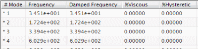

Quick View the mode shapes
 Simulation Navigator
Simulation Navigator
-
 Normal Modes [10] (under the RS_Meta_Solution_1 node)
Normal Modes [10] (under the RS_Meta_Solution_1 node)
-
Response Simulation Details View
The Response Simulation Details View panel displays the dynamic characteristics (frequency, mass, damping, and stiffness) for each normal mode solved in the response dynamics solution.

The modal representation for this model consists of 10 normal modes and 15 constraint modes. Each enforced DOF in the enforced motion location you defined earlier generated a single constraint mode. Your enforced motion location has 15 nodes with one DOF enforced, so 15 constraint modes were generated.
-
Normal Modes [10]
-
 Quick View
Quick View
By default, displacement magnitude results for Mode 1 are displayed.
You can view the constraint mode shapes by right-clicking the Constraint Modes node under the RS_Meta_Solution_1 node and choosing Quick View.
 Return to Model (Layout Manager toolbar)
Return to Model (Layout Manager toolbar)
|
Note |
You may need to turn on the Layout Manager toolbar. |